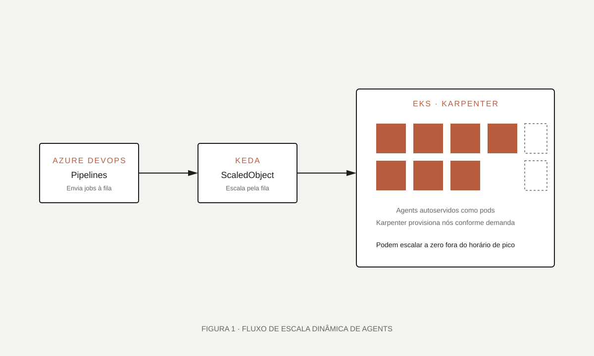

01 · Visão geral
Pipelines rápidos, sem manter agents ociosos.
A operação em Azure DevOps sofria com filas em horários de pico e agents subutilizados fora do expediente. A proposta foi migrar para uma plataforma elástica sobre Kubernetes, escalando pods e nós conforme a fila real.
[Complete com o contexto: quantos pipelines, tipos de tecnologia, horários de pico e restrições da operação anterior.]
Filas grandes em pico e capacidade ociosa em horários fora do expediente.
Agents self-hosted em EKS, escalados por KEDA e nós por Karpenter.
Elasticidade sob demanda, melhor uso de recursos e experiência mais previsível.
02 · O desafio
Balancear performance percebida e custo.
Precisávamos garantir que builds importantes não esperassem em fila, mas sem manter um exército de VMs ligadas o tempo todo. Também era essencial preservar a integração com Azure DevOps como está.
“Escalar em minutos, custar pelo que realmente foi usado, sem reescrever pipelines.”
- Suportar múltiplos tipos de agente (Java, Node, Python, mobile).
- Escalar horizontal e verticalmente conforme a fila.
- Manter isolamento de credenciais e artefatos entre execuções.
- Fornecer métricas claras para o time de plataforma.
03 · Meu papel
Do desenho à operação da plataforma.
Liderei o desenho da solução, escrevi os módulos de infraestrutura e configurei a integração com Azure DevOps. Também definimos as métricas e alertas com o time de observabilidade.
Arquitetura: escolha dos componentes, pools de agents e política de escala.
Implementação: IaC do cluster, Helm charts dos agents e configuração de KEDA e Karpenter.
Operação: métricas, alertas, runbooks e onboarding dos primeiros times.
04 · Arquitetura
Fila → KEDA → pods → Karpenter → nós.
O fluxo começa na fila do Azure DevOps. O KEDA lê essa fila e escala os pods de agents. Quando não há nós suficientes, o Karpenter provisiona capacidade adicional. Ao encerrar, tudo é devolvido.

assets/projetos/arquitetura-agents-escalaveis.svg.Componentes principais
EKS
Cluster gerenciado com pools dedicados aos agents e isolamento por namespace.
Karpenter
Provisionamento de nós conforme demanda, com escolha do instance type mais eficiente.
KEDA
Escala pods de agents com base no tamanho da fila do Azure DevOps.
Azure DevOps
Pipelines existentes seguem apontando para os pools autoescaláveis.
05 · Implementação
Piloto controlado, evolução iterativa.
Começamos por um pool com carga previsível para validar o comportamento de escala. A cada rodada, ajustamos limites, requests, timeouts e políticas de instance type.
- 1
Cluster e pools
Cluster EKS com IAM, redes e node groups específicos para agents.
- 2
Karpenter
Configuração de provisioners com preferência por tipos elegíveis à carga.
- 3
KEDA
ScaledObjects por pool, com métricas da fila do Azure DevOps.
- 4
Onboarding
Migração progressiva dos pipelines para os pools autoescaláveis.

06 · Decisões técnicas
Onde priorizamos performance e onde priorizamos custo.
Cada escolha teve consequências operacionais claras — documentar isso ajuda futuras rodadas de otimização.
07 · Resultados
Menos fila, menos ociosidade.
Os principais ganhos aparecem em picos de release e fora do expediente. A operação passou a ter uma curva de custo alinhada com a curva de uso.
Capacidade adicional em minutos, sem intervenção manual.
Menos capacidade ociosa fora dos horários de pico.
Métricas de fila, tempo médio de start e utilização por pool.
08 · Aprendizados
Escalar bem é escalar com sinal.
O maior aprendizado foi definir qual sinal usar para escalar. O tamanho da fila se mostrou mais preciso do que métricas indiretas de CPU.
- Simular picos antes de ligar produção evita surpresa depois.
- Definir bons SLOs internos para tempo de start dos pods.
- Investir em observabilidade cedo compensa em cada iteração.